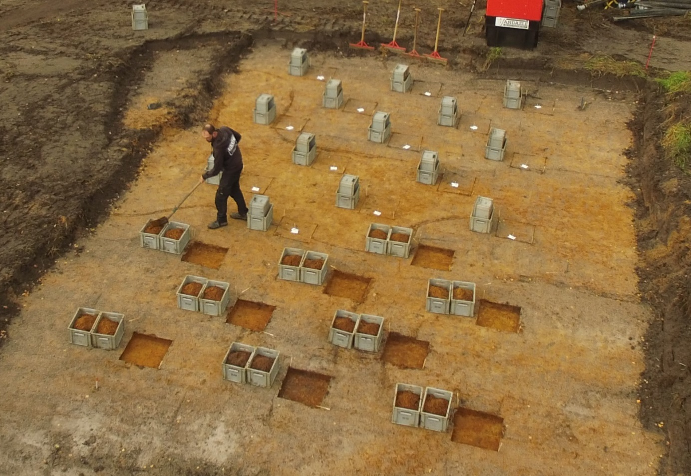

5.1 Inleiding
Voor steentijd artefactensites is tussen prospectie en de opgraving bijna steeds een fase van waarderingsonderzoek vereist.
Wanneer een site wordt aangetroffen in een preventief traject stelt zich in de eerste plaats de vraag of verder onderzoek vereist is. Moet de site worden opgegraven of niet? Dit wordt bepaald op basis van het wetenschappelijk informatiepotentieel van de site. Voor mobiele artefactensites worden hiervoor de volgende criteria tegen elkaar afgewogen (zie 5.3 voor meer details):
bewaringstoestand;
densiteit aan artefacten;
zeldzaamheid van de chronoculturele context, het type en/of de ligging van de site;
mogelijkheden tot chronologische studies;
mogelijkheden tot studie van het landschap.
Wanneer voor opgraving wordt gekozen is het bovendien nodig om de site af te bakenen. Dit is nodig voor het bepalen van een efficiënte opgravingsstrategie. Dit doe je zowel:
verticaal (op welk(e) niveau(s) zijn de mobiele artefacten aanwezig?),
als horizontaal (waar in het onderzoeksgebied zijn opgravingswaardige contexten aanwezig?).
5.2 Technieken
5.2.1 Inleiding
Waardering van steentijd artefactensites vereist bijna steeds proefputtenonderzoek.
Archeologisch boringen nemen slechts een zeer klein monster van de bodem (0,018 m² bij 15 cm diameter, 0,008 m² bij 10 cm diameter; zie 4.2.2.2.3). Ze zijn daarom niet betrouwbaar om de lokale artefactdensiteit te bepalen. Met boringen kan je dus NIET vaststellen of er een artefactconcentratie aanwezig is of niet.
In het verleden werd vaak geprobeerd om positieve boringen te ‘bevestigen’ door er één of meerdere boringen naast te plaatsen, of er een ‘krans’ aan boringen rond te plaatsen door het grid lokaal te verdichten (fig. 5.1). De praktijk heeft echter geleerd dat dit geen betrouwbare resultaten oplevert. Proefputtenonderzoek blijkt de enige betrouwbare manier om de lokale artefactdensiteit te onderzoeken (zie 5.2.2).
Om dezelfde reden kan je een artefactconcentratie NIET afbakenen met boringen. Ook dit is alleen mogelijk met proefputten.
- er één of twee boringen langs te plaatsen (links);
- het grid alleen lokaal te verdichten tot een krans van boringen (rechts).
Sommige ‘waarderende’ boringen zijn positief en andere niet, maar deze resultaten zeggen niets over de aan- of afwezigheid van een artefactconcentratie. Deze technieken werken niet om de waarde van positieve boringen te bepalen.
5.2.2 Proefputten in functie van steentijd artefactensites
5.2.2.1 Doel en onderzoeksvragen
Proefputten worden ingezet voor de waardering van vondstlocaties, nadat deze bij prospectie werden gedetecteerd.
Proefputtenonderzoek is de enige sluitende techniek om de aan- of afwezigheid van artefactconcentraties te bepalen. Met proefputten neem je een veel groter monster dan met boringen. De kleinste proefputten zijn 0,25m² groot, tegenover 0,018 m² voor de grootste courant gebruikte boordiameter (15 cm), wat volstaat om inzicht te verkrijgen in de lokale artefactdensiteit (fig. 5.2). Met proefputten kan je dus bepalen of er zich op een bepaalde plaats, doorgaans een positieve vondstlocatie uit de prospectie, een artefactconcentratie bevindt of eerder een lage densiteit aan artefacten. Deze informatie is zeker niet het enige criterium om een site al dan niet op te graven, maar wel een belangrijk, en is bovendien nodig om de strategie en methodiek voor die opgraving te bepalen. Daarom bevat een waardering van steentijdsites bijna altijd proefputtenonderzoek.
Met proefputten kan je ook artefactconcentraties afbakenen. Door proefputten in een grid te plaatsen kan je de ruimtelijke evolutie van de artefactdensiteit in kaart brengen. Met die gegevens kan je de grenzen tussen zones met hogere en lagere artefactdensiteit in beeld brengen en dus concentraties afbakenen (fig. 5.3). Dit is niet nodig om de opgravingswaardigheid van een vindplaats te bepalen, maar kan wel belangrijk zijn voor de planning van de opgraving.
Proefputtenonderzoek kan ook meer inzicht bieden in de chronoculturele context van een site. Door de grotere monsters zamel je bij proefputtenonderzoek meestal veel meer vondsten in dan bij booronderzoek. Dat vergroot de kans op het treffen van artefacten die je aan een bepaalde periode of cultuur kan toewijzen. Een groter aantal vondsten laat ook een betere evaluatie van hun bewaringstoestand toe. De zeldzaamheid van de chronoculturele context en de bewaringstoestand van de artefacten zijn twee belangrijke criteria om de opgravingswaardigheid van een site te bepalen.
Ten slotte kan je met proefputten de positie van de artefacten in de bodem in meer detail onderzoeken. Bij proefputtenonderzoek wordt de verticale positie van artefacten nauwkeuriger geregistreerd dan bij boringen. De zeefeenheden van 5 of 10 cm zijn dunner dan de boorkop van Edelmanboringen, en bovendien zorgt de verstoring van de monsters bij Edelman- en avegaarboringen voor een lagere precisie. Met proefputtenonderzoek kan je de verticale positie van de artefacten daarom beter correleren aan de observatie en registratie van de profielen, en dus een beter inzicht bekomen in hun stratigrafische positie. Je krijgt ook een nauwkeuriger beeld van de verticale artefactspreiding.
Opgraven met de 3D-methode biedt een nog hogere graad van detail, want je brengt hiermee de positie van de individuele artefacten zeer nauwkeurig in kaart. Het laat bovendien toe om op het terrein de exacte relatie tussen de artefacten en het omringende sediment te observeren. Deze techniek kan dan ook heel nuttig zijn bij complexe contexten.
- proefput van 1 bij 1 m: 1 m²
- proefput van 0,5 bij 0,5 m: 0,25 m²
- boring van 15 cm: 0, 018 m²
- boring van 10 cm: 0,008 m².
Het aantal vondsten dat door elke oppervlakte wordt gevat verduidelijkt de mogelijkheden van proefputten tegenover boringen voor het bepalen van de aanwezige densiteit aan artefacten.
5.2.2.2 Methode
5.2.2.2.1 Algemeen
Er is veel variatie mogelijk in de precieze aanpak van proefputtenonderzoek. Je kan:
verschillende groottes van proefputten hanteren;
proefputten op verschillende manieren inplanten;
proefputten op verschillende manieren graven.
Dit is nodig om tegemoet te komen aan de variatie in:
onderzoeksvragen. Bij waarderingsonderzoek stellen zich niet altijd dezelfde vragen. Ook hun relatief belang kan sterk verschillen van project tot project. Om artefactconcentraties af te bakenen moet je bijvoorbeeld proefputten in een grid plaatsen, wat voor het beantwoorden van andere waarderingsvragen niet altijd nodig is.
de aard van de verwachte sites. Voor bijvoorbeeld weinig dense sites kunnen grotere putten effectiever zijn, en voor kleine artefactconcentraties kan een dicht grid aangewezen zijn.
de aard van de ondergrond. Een complexe stratigrafie kan bijvoorbeeld opgraven met de 3D-methode nodig maken. Om dieper liggende niveaus te bereiken kunnen grotere proefputten noodzakelijk zijn.
Er bestaat dus geen standaardmethode die altijd en overal kan toegepast worden. In plaats daarvan bepaal je de strategie van elk proefputtenonderzoek op basis van de specifieke onderzoeksvragen, aard van de site en aard van de ondergrond.
Je voorziet bovendien best voldoende flexibiliteit in die strategie. Bij waarderingsonderzoek verzamel je meer detailgegevens over meer diverse onderzoeksvragen dan bij de voorgaande onderzoeksfasen. Nieuwe inzichten worden tijdens het onderzoek verworven, waardoor bepaalde verwachtingen soms al tijdens het terreinwerk moeten bijgesteld worden. Dat vereist vaak een aanpassing van de strategie. Indien bijvoorbeeld het voorziene aantal proefputten geen duidelijkheid brengt over de aan- of afwezigheid van artefactconcentraties kan het nodig zijn om extra proefputten te plaatsen. Of indien een concentratie doorloopt tot buiten het geplande grid van proefputten kan het wenselijk zijn om het grid uit te breiden (fig. 5.4).
5.2.2.2.2 Grootte
Proefputten zijn steeds vierkant, maar ze kunnen verschillen in grootte. Je kiest het formaat in de eerste plaats op basis van de diepte die je in de putten moet bereiken.
Proefputten van 0,5 bij 0,5 m (0,25 m²) zijn het kleinste formaat dat de CGP toelaat1. Deze afmetingen volstaan meestal voor het verzamelen van ruimtelijke gegevens. Eén proefput komt horizontaal daarom overeen met één zeefeenheid (fig. 5.5).
Door hun kleinere oppervlakte zijn proefputten van 0,25 m² goedkoper dan grotere putten. Ze zijn daarom heel geschikt om in een (dens) grid aan te leggen. Dezelfde kleine oppervlakte maakt het echter moeilijk om diep te graven.
Proefputten van 1 bij 1 m (1 m²) zijn het grootste formaat dat de CGP toelaat2. Hun grotere oppervlakte maakt ze geschikter als je diepere niveaus moet bereiken.
Voor de monstername verdeel je ze echter best in vier zeefeenheden van 0,5 bij 0,5 m, zodat de registratie van ruimtelijke gegevens even nauwkeurig blijft als bij proefputten van 0,25m² (fig. 5.6). Alleen als de bewaringstoestand registratie per 0,25m² weinig zinvol maakt, kan je de zeefeenheden vergroten tot 1 m² (de hele proefput).
Soms is ook een put van 1 bij 1m te klein om:
de nodige diepte te bereiken;
bepaalde onderzoeksvragen te beantwoorden, bijvoorbeeld over het ruimtelijk verloop van de stratigrafie.
Dan kan je meerdere proefputten naast elkaar aanleggen om grotere putten te bekomen, bijvoorbeeld 1 bij 2 m of 2 bij 2 m (fig. 5.7 en fig. 5.8). Je kan op die manier zelfs ‘sleuven’ aanleggen. Je verzamelt en zeeft het sediment natuurlijk nog steeds afzonderlijk per proefput/zeefeenheid.

5.2.2.2.3 Plaatsing/grid
Volgens de CGP is het doel van proefputten in functie van steentijd artefactensites: ‘door een beperkt maar statistisch representatief deel van een terrein op te graven, uitspraken te doen over de archeologische waarde van het gehele terrein’.
De moeilijkheid bestaat erin om te bepalen hoe groot een statistisch representatief deel van het terrein precies is.
Dat is afhankelijk van:
de onderzoeksvragen. Om artefactconcentraties af te bakenen moet je ze in een grid plaatsen terwijl voor andere onderzoeksvragen één of enkele proefputten kunnen volstaan.
de aard van de verwachte site.
de aard van de ondergrond.
Proefputten in een dens grid zijn steeds effectief. Deze methode kan ingezet worden in elke situatie en beantwoordt meestal alle onderzoeksvragen.
In de huidige praktijk worden verschillende gridpatronen gebruikt. Enkele voorbeelden:
Een verspringend grid van 2,5 bij 2,5 m met proefputten van 0,25 m² wordt vaak gebruikt en blijkt zeer effectief. Het wordt vaak georganiseerd in blokken van 5 bij 5 m. In dit grid plaats je om de 1,5 m een proefput en graaf je gemiddeld 12,5 proefputten per vak van 5 bij 5 m op, ofwel 12,5 % van de oppervlakte (fig. 5.9: links).
Een vierkantsgrid van 3 bij 3 m biedt een goed alternatief voor proefputten van 1 m² (fig. 5.9: rechts). Hiermee graaf je gemiddeld bijna evenveel op (1/9 van de oppervlakte, of 11,9 %).
Ook andere gridpatronen zijn mogelijk. Je kiest het grid steeds bewust om tegemoet te komen aan de grootte van de proefputten, de specifieke onderzoeksvragen en de aard van de verwachte site (grootte, artefactdensiteit).
De CGP stipuleert een maximaal grid van 15 bij 18 m. Dit vindt echter zijn oorsprong in prospectie met proefputten in bouwvoorcontexten, en is veel te breed voor de meeste waarderingsonderzoeken.
Het is vaak moeilijk om proefputten lang open te laten voor de start van een opgraving. De wanden kunnen eroderen, waardoor de site in de aanpalende opgravingsvakken beschadigd wordt. Je kan proefputten afdekken en/of dempen in afwachting van opgraving, maar bij grote aantallen proefputten is ook dat niet eenvoudig. Bovendien vraagt proefputtenonderzoek in een dens grid vaak een gevoelige logistieke inspanning, vooral bij grotere projecten, zoals bijvoorbeeld het inrichten van een zeefstand op het terrein.
Daarom wordt proefputtenonderzoek in een dens grid vaak naar de opgravingsfase verschoven. Het proefputtenonderzoek vormt dan een eerste fase van de opgraving. Op basis van de resultaten wordt vervolgens bepaald welke zone(s) verder vlakdekkend wordt opgegraven. Dit betreft natuurlijk een louter formele toewijzing, die alleen dient om het onderzoek op praktisch vlak optimaal te organiseren. Inhoudelijk dient het proefputtenonderzoek nog steeds hetzelfde doel: waarderingsvragen te beantwoorden.
Om een opgravingsfase op die manier te organiseren is het vaak nodig om de opgravingswaardigheid van de site al vroeger vast te stellen. Proefputtenonderzoek in een dens grid is daarnaast relatief duur. Daarom kan het wenselijk zijn om de strategie van het proefputtenonderzoek nog niet te richten op de afbakening van eventuele artefactconcentraties, maar eerst de onderzoeksvragen te beantwoorden die louter op de opgravingswaardigheid van de site zijn gericht.
Met een beperkt aantal proefputten kan je vaak de belangrijkste vragen naar opgravingswaardigheid op een kostenefficiëntere manier beantwoorden. Voor weinig complexe contexten volstaan één of enkele proefputten meestal om de ideeën uit de vorige onderzoeksfasen over de lokale bodembewaring, geomorfologie en stratigrafie te bevestigen of ontkennen.
Een klein aantal proefputten kan ook volstaan om de lokale artefactdensiteit vast te stellen. De betrouwbaarheid hiervan verhoogt echter met het aantal proefputten (fig. 5.10):
Een laag vondstaantal in een proefput bij een positieve boring kan veroorzaakt worden door een afwezigheid van artefactconcentraties, maar beiden kunnen ook in de periferie van een artefactconcentratie liggen, enkele meters van de (onopgemerkte) concentratie zelf. Door meer proefputten bij een positieve boring te plaatsen verlaag je de kans dat je eventuele artefactconcentraties op die manier mist.
Eén proefput met een groot aantal vondsten toont meteen de aanwezigheid van een hoge densiteit op die plaats. De onderzoeksvraag naar lokale artefactdensiteit is daarmee beantwoord, en het is hiervoor niet nodig om op deze plek meer proefputten te graven.
Bij de plaatsing van proefputten let je erop dat je ze later goed kan integreren in het opgravingsgrid en meetsysteem van een eventuele opgraving. De data uit de proefputten moet immers bij de opgravingsresultaten kunnen gevoegd worden voor een volledig beeld van de site.
5.2.2.2.4 Opgravingstechniek
Proefputten in functie van steentijd artefactensites graaf je steeds handmatig. Je kan op twee manieren te werk gaan: met de kwadratenmethode of met de 3D-methode.
Met de kwadratenmethode verzamel je het sediment met de schop in verticaal gescheiden eenheden, die vervolgens gezeefd worden (fig. 5.11). Zo krijg je vat op de verticale positie van de vondsten, en kan je deze correleren aan de bodem.
Door op te graven met de 3D-methode beoog je de vondsten zoveel mogelijk in situ bloot te leggen (meestal met het truweel) om ze vervolgens nauwkeurig drie-dimensioneel in te meten (fig. 5.12). Dit laat toe om de positie van de artefacten in de bodem in groot detail te observeren en registreren, en hier eventueel patronen in te herkennen.
Het weggegraven sediment wordt steeds ook gezeefd, in dezelfde vaste zeefeenheden als bij opgraven met de kwadratenmethode. Zelfs bij voorzichtig opgraven met het truweel mis je immers altijd een belangrijk deel van de artefacten, vooral de kleinere fractie.
Opgraven met de 3D-methode biedt op inhoudelijk vlak alleen voordelen tegenover opgraven met de kwadratenmethode, en werd daarom vroeger als standaard opgravingstechniek gehanteerd. Opgraven met de 3D-methode is echter tijdrovender en dus duurder, waardoor opgraven met de kwadratenmethode onder invloed van de preventieve archeologie al geruime tijd de standaard techniek is geworden. Opgraven met de 3D-methode wordt in de huidige praktijk alleen toegepast indien noodzakelijk om de relatie tussen vondsten en bodem te begrijpen, bijvoorbeeld in complexe alluviale contexten. Ook bij sites met een uitzonderlijk goede bewaring van de ruimtelijke context kan deze techniek een meerwaarde bieden.
5.2.2.2.5 Monstername
Net zoals bij archeologische boringen bemonster je bij proefputtenonderzoek steeds elke aardkundige eenheid die mogelijk vondsten bevat. In de praktijk wordt best de volledige proefput bemonsterd (fig. 5.13). Enkel bij grote diepteverschillen kunnen steriele niveaus eventueel onbemonsterd blijven. Recentere afzettingen die het vondstniveau afdekken kunnen bijvoorbeeld machinaal verwijderd worden bij de start van het proefputtenonderzoek. Hierbij neem je steeds voldoende marge om te voorkomen dat je de aardkundige eenheid die vondsten bevat per ongeluk beschadigt, en/of vondsten mist die onder invloed van postdepositionele processen tot in de bovenliggende aardkundige eenheid zijn gemigreerd (fig. 5.14).
Bij proefputten in een dens grid kan het soms, afhankelijk van de specifieke context en vraagstellingen, volstaan om de bovenste 10 of 20 cm van het relevante niveau te bemonsteren. De bemonsterde oppervlakte kan hierbij groot genoeg zijn om op die manier een betrouwbaar beeld te bekomen van de omvang van de aanwezige artefactconcentraties, hun datering en het grondstofgebruik5.
Je kan het uitgegraven sediment zeven per aardkundige eenheid of per arbitrair niveau.
Zeven per aardkundige eenheid is in de praktijk niet steeds eenvoudig door het vaak onregelmatig verloop van lagen en bodemhorizonten. Bovendien moet je ze volgens de CGP opdelen in arbitraire niveaus van maximaal 10 cm als het aardkundig niveau dikker is.
Daarom worden proefputten in de huidige praktijk meestal gekozen voor zeven per arbitrair niveau. De CGP stelt 10 cm als maximale dikte van de niveaus. In de huidige praktijk worden zowel 5 als 10 cm dikke zeefeenheden courant gebruikt. Je kiest de dikte om zoveel mogelijk relevante verticale ruimtelijke informatie te vergaren. Dat doe je op basis van de verwachte:
complexiteit van de natuurlijke en archeologische stratigrafie;
dikte en aard van de aardkundige eenheden;
dikte en aard van het archeologisch niveau;
bodembewaring.
Een homogene ploeglaag van 30 cm dikte opdelen in zeefeenheden van 5 cm of zelfs 10 of meer cm dikte is bijvoorbeeld weinig zinvol. Maar indien bijvoorbeeld een 10 cm dikke afgedekte bodem aanwezig is, of het vondstniveau naar verwachting slechts 15 cm dik is, hanteer je best dunnere zeefeenheden van 5 cm.
Na het uitgraven van een aardkundige eenheid of arbitrair niveau meet je voor elk vak van 0,25 m² steeds de hoogte in. Dit is essentieel om de verticale positie van de vondsten te bepalen, en in combinatie met de profielregistratie ook hun relatie met de bodem (zie 5.2.2.2.8).
Indien een deel van de verwachte site in een ploeglaag is opgenomen zijn, maakt deze ploeglaag volgens de CGP deel uit van de vraagstelling en moet ook deze (gescheiden) bemonsterd worden. Bij een waarderingsonderzoek is het immers belangrijk om ook inzicht te verkrijgen in het deel van de site dat in de ploeglaag werd opgenomen. Dit vertelt immers veel over de bewaringstoestand van de site als geheel, en dus ook van het deel dat zich in ongestoorde bodem onder de ploeglaag bevindt. Door beide componenten te vergelijken kan je nagaan hoeveel van de site door landbouwactiviteiten werd verplaatst (fig. 5.15).
Bovendien vormt het potentieel van de site voor kennisvermeerdering nog het onderwerp van het waarderingsonderzoek. De bewaringstoestand van mobiele artefactensites in een ploeglaag kan sterk variëren, en kan soms zelfs de bewaringtoestand in een natuurlijke holocene bodem benaderen (zie 2.2.6). Bovendien kan een slechtere ruimtelijke integriteit worden gecompenseerd door bijvoorbeeld de zeldzaamheid van de chronoculturele context. Een Magdaleniaansite in de ploeglaag graaf je bijvoorbeeld best wel op.
5.2.2.2.6 Zeeftechniek
Het uitgegraven sediment wordt steeds gezeefd, ook bij opgraven met de 3D-methode.
Correct zeven, behandelen en uitzoeken van de monsters is essentieel om ervoor te zorgen dat aanwezige artefacten wel degelijk worden waargenomen.
Er wordt in principe steeds nat gezeefd. Droog zeven kan in sommige gevallen op voldoende efficiënte wijze uitgevoerd worden, bijvoorbeeld bij droog zand en een relatief grote maaswijdte (2mm of meer), maar het resulteert in ‘vuilere’ zeefresidu’s waarin archeologische indicatoren moeilijker herkenbaar zijn. Het is bovendien meestal nodig om te wrijven bij droog zeven, wat ecofacten en handgevormd aardewerk kan vernielen voor ze herkend worden.
De zeefresidu’s worden gedroogd en daarna gecontroleerd op de aanwezigheid van archeologische indicatoren. In natte zeefmonsters kleven recente organische resten, sediment en archeologische indicatoren immers aan elkaar, wat de herkenning van vondsten bemoeilijkt.
Het op grootte sorteren van gedroogde residu’s (dus opnieuw zeven) kan helpen bij de herkenning van archeologische indicatoren. Dit kan vooral nuttig zijn bij residu’s rijk aan organisch materiaal en/of grind.
Het uitzoeken van de zeefresidu’s dient steeds te gebeuren door iemand met een ruime ervaring met lithische artefacten. Denk eraan dat de meeste artefacten vaak zeer klein zijn, bijvoorbeeld tot slechts 2 mm bij zeven op een maaswijdte van 2 mm. In de waarderingsfase is deze kleine fractie even waardevol als grotere vondsten.
5.2.2.2.7 Maaswijdte zeef
De CGP schrijft een maximale maaswijdte van 2 mm voor, net zoals voor opgraving van steentijdsites. Je wil de gegevens van de proefputten immers kunnen integreren in de resultaten van een eventueel volgende opgraving.
2 mm is de maximale maaswijdte. Ook de fijnere maaswijdte van 1 mm kan een meerwaarde bieden voor het inzamelen van lithische artefacten, afhankelijk van de context en aard van de site. Bij een verwachting naar aanwezigheid van kleine plantaardige (bijv. zaden) of dierlijke resten kan het bovendien nuttig zijn om een selectie van de monsters te zeven op 0,5 mm.
De CGP laat bredere maaswijdtes toe (tot maximaal 6 mm) indien een fijnere maaswijdte niet relevant is voor het beantwoorden van de onderzoeksvragen. Dit is alleen bedoeld voor heel specifieke contexten waar je ook bij opgraving een grotere maaswijdte kan motiveren, zoals zeer grindrijke sedimenten waarin het onderscheid tussen kleine archeologische chips en natuurlijke schilfers minder duidelijk kan zijn.
5.2.2.2.8 Profielregistratie
Van alle proefputten wordt in het veld de sedimentaire en pedologische opbouw onderzocht en geregistreerd. Dit is immers nodig om de stratigrafische positie van de vondsten te bepalen. De profielen van proefputten bieden bovendien extra mogelijkheden tegenover de voorgaande booronderzoeken om je inzicht in de lokale bodem(bewaring) en geomorfologie te verfijnen (zie 5.2.2.1).
Daartoe beschrijf je voor elke proefput van alle relevante aardkundige eenheden minstens:
de aard;
de bewaringtoestand;
de diepte;
de eventuele aanwezigheid van vondsten.
Je fotografeert minstens het meest representatieve putwandprofiel van elke proefput.
Een representatieve selectie van de proefputten beschrijf je bovendien zoals een referentieprofiel volgens de vereisten van de CGP.
Voor deze profielregistratie is een ruime ervaring met de geomorfologie en bodems van de regio vereist.
Het kan soms een goed idee zijn om proefputten verder te verdiepen dan nodig is voor de monstername voor culturele vondsten. Onderliggende aardkundige niveaus kunnen relevante informatie bieden, bijvoorbeeld over de geomorfologie en daarmee de datering van de site. Indien deze aanwezig zijn, neem je ze dus mee in je onderzoek van (een deel van) de proefputten.
Bij proefputtenonderzoek is het belangrijk om aandacht te hebben voor sporen in het vlak. Antropogene sporen uit het paleolithicum en mesolithicum zijn extreem zeldzaam, maar daarom ook van grote wetenschappelijke waarde. Recentere menselijke en natuurlijke sporen komen veel vaker voor, en zijn van belang voor de (lokale) bewaringstoestand van de steentijdsite. En natuurlijk hebben recentere archeologische sporen hun eigen wetenschappelijke waarde.
Sporen herkennen in proefputten is door de beperkte oppervlakte echter niet eenvoudig. Ze kunnen bovendien pas vanaf een bepaalde diepte zichtbaar worden, bijvoorbeeld onder de natuurlijke holocene bodem.
Daarom blijf je bij het graven van proefputten steeds alert voor de mogelijke aanwezigheid van sporen. Je schaaft na het uithalen van een zeefniveau het vlak op als dat nodig is voor een goede zichtbaarheid. Indien sporen worden aangetroffen, graaf je de inhoud ervan op volgens de vereisten van de CGP, maar zonder het omringend sediment te beschadigen. Eventuele steentijdvondsten registreer je zoals andere vondsten in sporen. Je zeeft het sediment van de sporen bovendien apart, en op dezelfde maaswijdte als de rest van de proefput. Op die manier kan je de aanwezigheid van steentijdvondsten binnen en buiten de sporen met elkaar vergelijken.
5.3 Advisering naar vervolgonderzoek: wat is opgravingswaardig?
Op het einde van een waarderingsonderzoek breng je alle informatie en inzichten samen, ook die uit de vorige onderzoeksfasen, om te bepalen of de site opgegraven moet worden of niet. Dat doe je op basis van het wetenschappelijk informatiepotentieel, dat je bepaalt door de volgende criteria tegen elkaar af te wegen:
Bewaringstoestand:
Ruimtelijke integriteit. Indicatoren hiervoor zijn:
bodembewaring;
verticale artefactspreiding;
relatie tussen de artefacten en de bodemopbouw;
horizontale artefactspreiding.
Bewaringstoestand van de vondsten:
bewaringstoestand van het lithisch materiaal;
bewaring van organische artefacten;
bewaring van ecofacten.
Artefactdensiteit.
Zeldzaamheid, in verhouding tot de bestaande (regionale) kennis6:
zeldzaamheid van de chronoculturele context;
zeldzaamheid van het type site;
zeldzaamheid van de landschappelijke positie.
Mogelijkheden voor intra site analyse van ruimtelijke, functionele en sociale aspecten:
mogelijkheden voor technologische studies;
mogelijkheden voor functioneel onderzoek (gebruikssporen, residu’s, …);
mogelijkheden voor ruimtelijke analyse.
Dateringsmogelijkheden:
Mogelijkheden voor absolute datering:
(mogelijkheid van) aanwezigheid van organische artefacten;
(mogelijkheid van) aanwezigheid van dateerbare ecofacten, correleerbaar met de menselijke occupatie.
Mogelijkheden voor datering op basis van stratigrafie:
Is de site afgedekt?
Zijn er (absolute) dateringsmogelijkheden voor de stratigrafie?
Is het een gestratifieerde site (meerdere archeologische niveaus)?
Mogelijkheden voor datering op basis van typologie en technologie: (mogelijkheid van) aanwezigheid van diagnostische artefacten.
Mogelijkheden voor studie van het prehistorische landschap:
(mogelijkheid van) aanwezigheid van markante geomorfologische elementen (afgedekte bodems, riviergeulen, …);
(mogelijkheid van) aanwezigheid van organische sedimenten;
(mogelijkheid van) aanwezigheid van ecofacten.
Bij geen enkele van deze criteria is een hoge score vereist. Een site met bijvoorbeeld een zeer slechte bewaringstoestand of een lage artefactdensiteit kan opgravingswaardig zijn als bijvoorbeeld de chronoculturele context of landschappelijke positie voldoende zeldzaam zijn.
Het spreekt voor zich dat deze afweging geen eenvoudige oefening is. Ze wordt daarom best gemaakt door een archeoloog met ruime ervaring in het opgraven, analyseren en publiceren van steentijdsites, en met een grondige kennis van het regionale kader. Minstens vraag je het advies van iemand met deze expertise, bijvoorbeeld als wetenschappelijke begeleiding.
Hiervan kan je afwijken mits verantwoording in de rapportering.↩︎
Hiervan kan je afwijken mits verantwoording in de rapportering.↩︎
van der Waa et al. 2021.↩︎
van der Waa 2020; van der Waa & Willems 2020.↩︎
Perdaen et al. 2018.↩︎
De onderzoeksbalans biedt hiervoor het nodige kader: Ryssaert et al. 2021; Noens et al. 2021; Vanmontfort 2019.↩︎